News
News from the field, updates on rescued animals, press coverage and how donations were spent.
 Rescue newsWhy were they left in a place like this?WeAct board
Rescue newsWhy were they left in a place like this?WeAct board Rescue newsSavers Project: Pyeongtaek city shelter
Rescue newsSavers Project: Pyeongtaek city shelter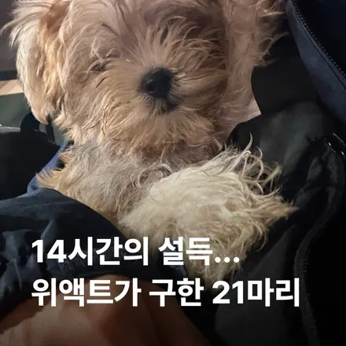
Rescue newsIllegal new-style pet shop in Mapo Rescue newsNeglected dog in Hwaseong
Rescue newsNeglected dog in Hwaseong Rescue newsNeglected dog in Pyeongtaek
Rescue newsNeglected dog in Pyeongtaek Rescue newsWe feared it, and it turned out to be true.
Rescue newsWe feared it, and it turned out to be true. Rescue newsA night of dog-tired work
Rescue newsA night of dog-tired work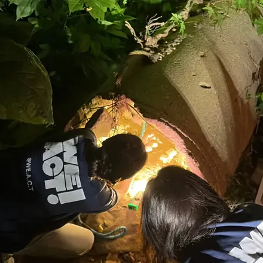
Rescue newsNeglected dog in Hwacheon Rescue newsNeglected dog in Guri
Rescue newsNeglected dog in Guri Rescue newsNeglected dogs in Goesan
Rescue newsNeglected dogs in Goesan Rescue newsDog meat farm in Jeonnam
Rescue newsDog meat farm in Jeonnam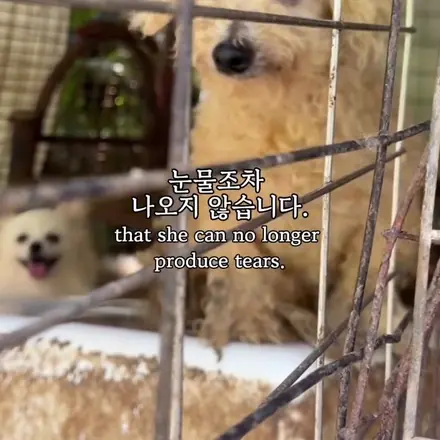
Rescue newsIllegal puppy mill in Pocheon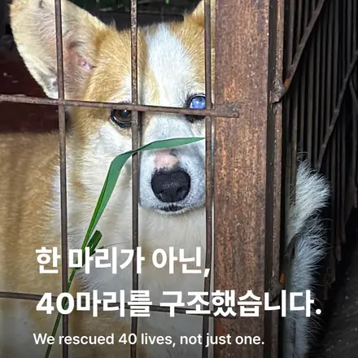
Rescue newsIllegal dog meat farm in Seongnam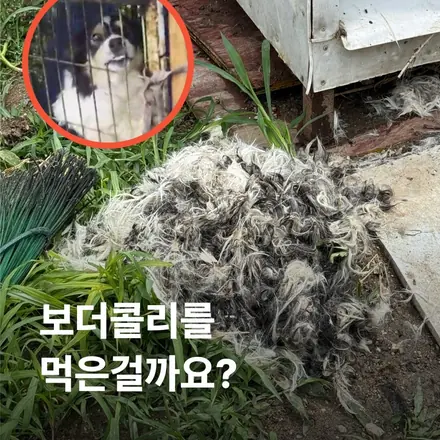
Rescue newsIllegal dog meat farm in Seongnam Rescue newsNeglected dogs in Mungyeong
Rescue newsNeglected dogs in Mungyeong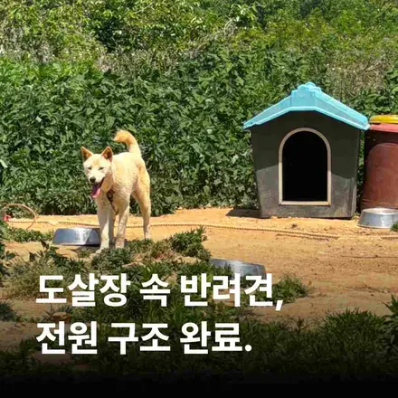
Rescue newsIllegal slaughterhouse in Suncheon, part 2 Rescue newsDog meat farm in Bongdam, Hwaseong, part 2
Rescue newsDog meat farm in Bongdam, Hwaseong, part 2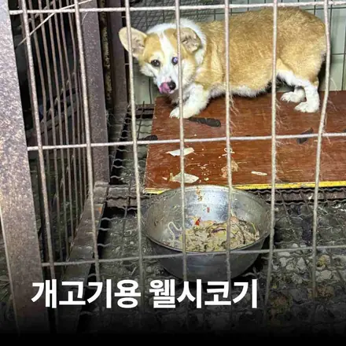
Rescue newsDog meat farm in Seongnam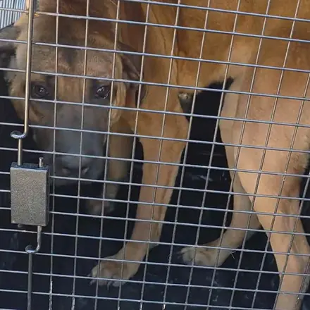
Rescue newsIllegal slaughterhouse in Suncheon Rescue newsSavers Project: Jeju city shelter
Rescue newsSavers Project: Jeju city shelter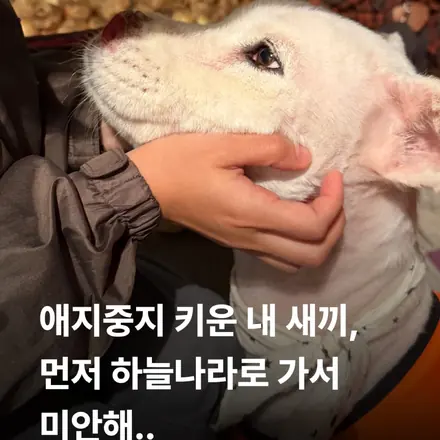
Rescue newsNeglected dog in Jeju Rescue newsIllegal dog meat farm in Jeju
Rescue newsIllegal dog meat farm in Jeju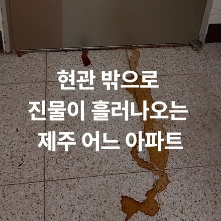
Rescue newsGarbage house in Jeju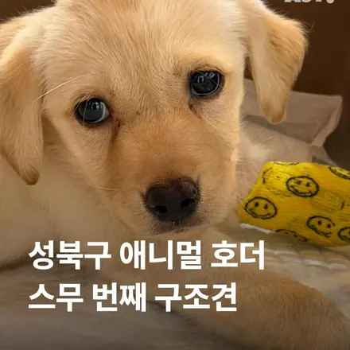
Rescue newsAnimal hoarder in Seongbuk-gu Rescue newsTumor-ridden white dog neglected in Gimhae
Rescue newsTumor-ridden white dog neglected in Gimhae Rescue newsCat with skin wounds in Hapcheon
Rescue newsCat with skin wounds in Hapcheon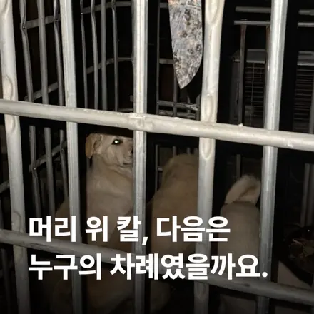
Rescue newsIllegal slaughterhouse in Hwaseong Rescue newsNeglected dogs in a Pyeongtaek pet shop
Rescue newsNeglected dogs in a Pyeongtaek pet shop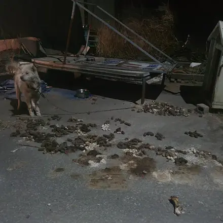
Rescue newsNeglected dog in Yeongwol Rescue newsNeglected dogs in an officetel in Pyeongtaek
Rescue newsNeglected dogs in an officetel in Pyeongtaek
Older posts are on WeAct’s board (in Korean).
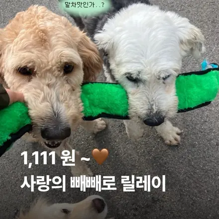
Life after rescueKRW 1,111 🤞 Love Pepero relayWeAct board Life after rescueFrom a dog meat farm dog to the baby of the family
Life after rescueFrom a dog meat farm dog to the baby of the family Life after rescueAn autumn outing for WeAct's rescue dogs
Life after rescueAn autumn outing for WeAct's rescue dogs Life after rescueAn autumn outing for WeAct's rescue dogs
Life after rescueAn autumn outing for WeAct's rescue dogs Life after rescueWeAct monthly newsletter, October issue
Life after rescueWeAct monthly newsletter, October issue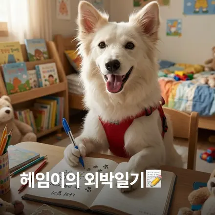
Life after rescueHeim's sleepover diary Life after rescue"We still need a mom..."
Life after rescue"We still need a mom..."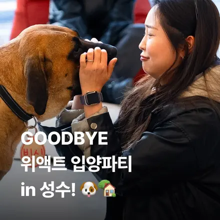
Life after rescueGOODBYE WeAct adoption party in Seongsu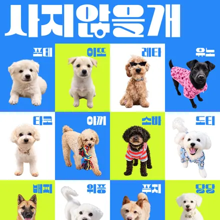
Life after rescueWeAct adoption party: the Dogs Not for Sale lineup revealed!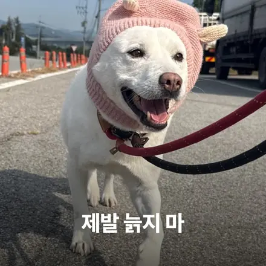
Life after rescuePlease, don't grow old Life after rescueWhat the toasted-rice scent does to humans
Life after rescueWhat the toasted-rice scent does to humans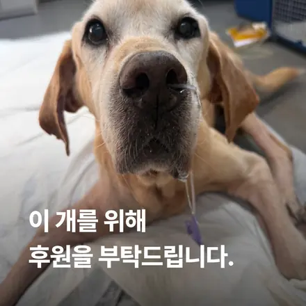
Life after rescuePlease donate for this dog Life after rescueThe adoption party everyone's been whispering about, revealed!
Life after rescueThe adoption party everyone's been whispering about, revealed!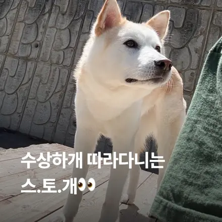
Life after rescueThe dog who suspiciously follows people around: the stalker dog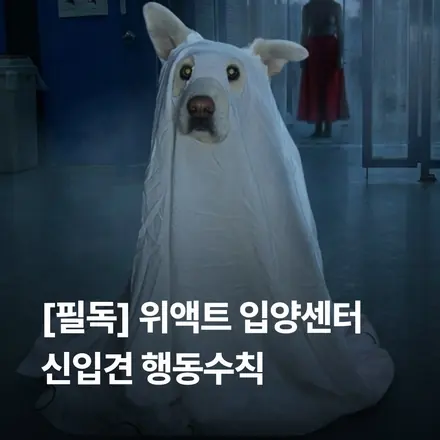
Life after rescueCode of conduct for new dogs at the WeAct adoption center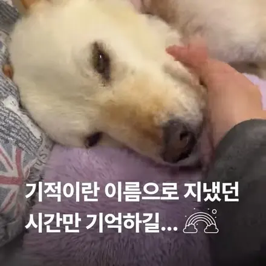
Life after rescueMay we remember only the time he lived as Gijeok, "Miracle"... Life after rescueStepping out of the net to start again
Life after rescueStepping out of the net to start again Life after rescueA past we may never know
Life after rescueA past we may never know Life after rescueTo Golden, who was always like sunshine...
Life after rescueTo Golden, who was always like sunshine...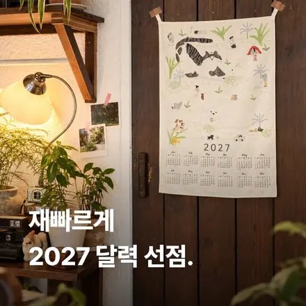
Life after rescueBe quick to claim the 2027 calendar Life after rescueThe dog who loved people most, the dog who was loneliest because of people
Life after rescueThe dog who loved people most, the dog who was loneliest because of people Life after rescueAll of Teunteun's photos look alike
Life after rescueAll of Teunteun's photos look alike Life after rescuePet etiquette for autumn outings with your dog
Life after rescuePet etiquette for autumn outings with your dog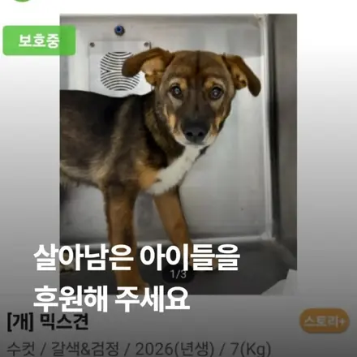
Life after rescuePlease support the dogs who survived Life after rescueThe wire that dug into living flesh, the dog who nearly died
Life after rescueThe wire that dug into living flesh, the dog who nearly died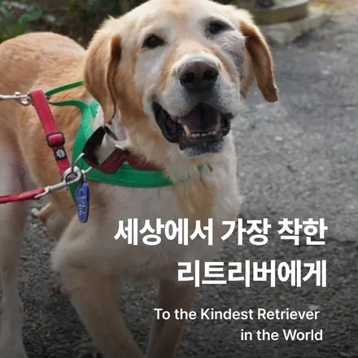
Life after rescueTo the kindest retriever in the world Life after rescueLet me show you my home
Life after rescueLet me show you my home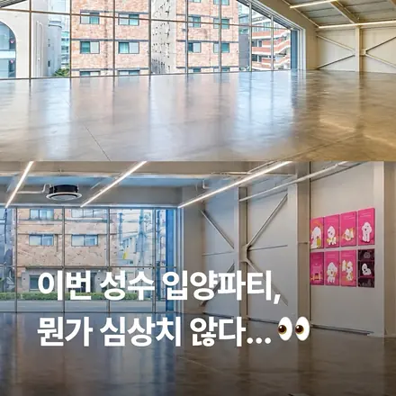
Life after rescueThis Seongsu adoption party is something else... 👀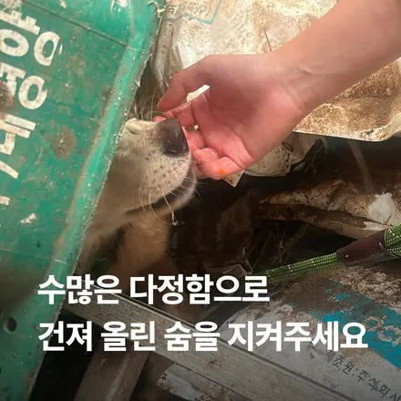
Life after rescuePlease protect the breaths we scooped up with so much kindness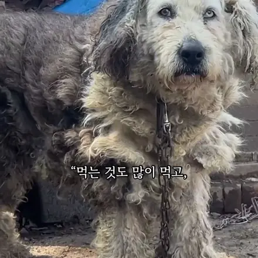
Life after rescueWe never thought she would get this big Life after rescueWeAct monthly newsletter, September issue
Life after rescueWeAct monthly newsletter, September issue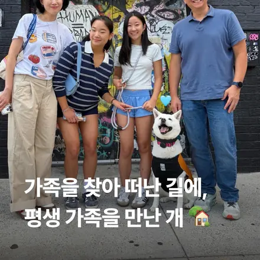
Life after rescueThe dog who met her forever family on the way to find one Life after rescueWhat's so bad about pet shops? (2)
Life after rescueWhat's so bad about pet shops? (2)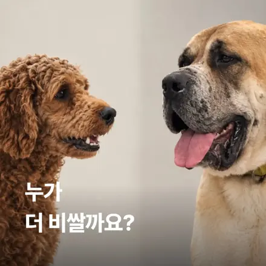
Life after rescueWhere smaller costs more, and where bigger costs more Life after rescue4 reasons to welcome a rabbit into your family
Life after rescue4 reasons to welcome a rabbit into your family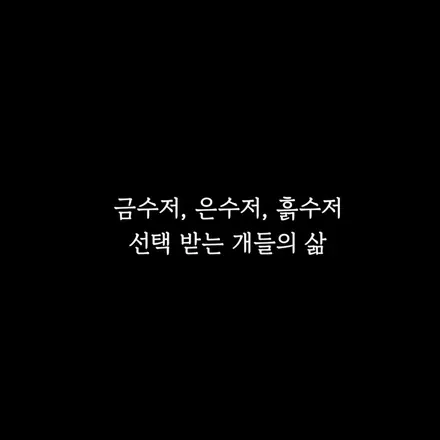
Life after rescueGold spoon, silver spoon, dirt spoon: the lives of the dogs who get chosen
Older posts are on WeAct’s board (in Korean).
- No.72Kwon Sang-woo and Son Tae-young, who adopted a dog at risk of euthanasia, do another good deed: sponsoring a 300-pyeong event spaceSports Chosun · 2026.11
- No.70'Huimangi' rescued from a concrete prison with exposed bones and a huge massNews1 · 2026.08
- No.69"A dog is lying in a car," says a tip. Limp and panting in the heat waveSBS
- No.68Son Tae-young and Kwon Sang-woo adopt a dog once slated for euthanasia after fostering him: "We're a big family now" (Mrs. New Jersey)OSEN · 2026.08
- No.67Owner of Hwaseong puppy mill sentenced to prison at first trial for "cutting open mother dogs while alive"Segye Ilbo · 2026.07
- No.66Rescuing 10 dogs trapped in garbage with WeActIlyo Sisa
- No.65[Press report] Adopted out, then "eaten"? A dog family vanishes from a public institution2026.02
- No.64<Sunday Guest> WeAct's Ham Hyeong-seon, representative, and Jeon Hye-su, activistIlyo Sisa
- No.63"You're dying because of you"... A thrown-away dog goes back to its ownerNews1 · 2025.12.31
- No.62<Special feature> Happiness regained through adopting a rescue dogIlyo Sisa · 2025.12.29
- No.59"We thought it was a family dog": a 'mutt factory' hidden on an apartment balcony [Puppy mill atrocities, part 4]Financial News · 2025.12
- No.57Mother dog 'Boreum' protected her puppies by rummaging through trash and drinking standing waterHankook Ilbo · 2025.12
- No.55<WeAct joint project> 'Baro' is waiting for a new familyIlyo Sisa
- No.53'A reliable big brother who looks after the baby': the dog who passed 3.2 million viewsNews1
- No.52How 'Zip', the dog who was hanging off the back of a truck, changed after his rescueHankook Ilbo
- No.49Special T-shirts and socks to help wildfire-hit animals: a Happybean fundraiser opensNews1 · 2025.07.24
- No.48A life squirming inside a sack: mixed-breed siblings who love peopleHankook Ilbo
- No.43"They cut open the mother dog's belly to take out the puppies": first trial of the operators of a 1,400-dog 'dog meat farm'Seoul Economic Daily · 2025.06.19
- No.42[Meong-meong Nyang-nyang] "We barely saved them, but they have no family": wildfire-hit animals left all aloneHealth Chosun · 2025.06.02
- No.41"Who would let a person like that keep a dog?" The day we met an abandoned dog in the snow [Gae-st House]Kukmin Ilbo
- No.40A pet dog kills a stray cat, and the neglectful owner is criminally reported2025.04
- No.36Even after his leash was cut, a yellow dog waited for his owner in the wildfire and was burnedNews1 · 2025.03
- No.35Animals left behind at the wildfire sites: "Please unleash them and open their cages"Kyeonggi Ilbo · 2025.03.26
- No.34<Sunday Guest> Ham Hyeong-seon, representative of the animal rescue group WeActIlyo Sisa · 2025.03.05
- No.33[News Blader] A puppy thrown from a second-floor villa window: "to scare it"SBS · 2025.02.14
- No.32Blindness and hernias in a hell of breeding... Busan turned a blind eye for 20 years [Dang-nyang Rescue Team]Edaily · 2024.10.19
- No.31"Dead dogs in the refrigerator": 30 puppies rescued from a home2024.09
- No.30The day police came after a dog was beaten: "I'll hit it again"Money Today · 2024.07
- No.29"I thought it was a fossil from a redevelopment area": a puppy rescued after suffering severe skin diseaseNews1 · 2024.06.03
- No.28"Please save 290 Bichons": why a licensed breeder sent an SOS to animal groupsHankook Ilbo · 2024.03.28
- No.27"Anything but euthanasia..." Hongseong animal shelter reaches out for Korea's first 'rescue every dog' [Dang-nyang Rescue Team]Edaily · 2024.03.23
- No.26Lucy Act conflict continues: briefings, protest rallies and even legislative pledgesDaily Vet · 2024.02.13
- No.24[Hankook Ilbo] Where do pet shop puppies come from? The 'Bye Buy' campaignHankook Ilbo
- No.23Around 100 carcasses in the freezer: 1,400 dogs rescued from a puppy millHankyoreh · 2023.09.03
- No.22A Bichon who gave birth again and again in an illegal puppy mill, yet loves peopleHankook Ilbo · 2023.08.13
- No.21"I got my shots and I'm waiting for a family": breeding dog Motti's second chapter of life [Gae-st House]Kukmin Ilbo · 2023.07.29
- No.20[Pet Owner Interview] WeAct's Ham Hyeong-seon: "Puppy mills are a hotbed of animal abuse that exploits dogs down to their toenails"Pet Post News · 2023.08.04
- No.19[Volunteering experience] Lost and abandoned animals need a family to love themPet Post News · 2023.07.25
- No.182,000 puppies 'produced' a year: inside a puppy factory [Gae-st House]Kukmin Ilbo · 2023.07.22
- No.17They know 'shake' and 'sit', but no owner comes for this mixed-breed dogHankook Ilbo · 2023.06.18
- No.16"It was hell": animal group rescues around 300 dogs and cats from a puppy millNews1 · 2023.06.21
- No.15When the illegal puppy mill was raided, they hid only the puppies that fetch moneyHankook Ilbo · 2023.06.15
- No.14<Ilyo Sisa TV> 'The rescued puppy again?' Illegal sales of pet dogs never stopIlyo Sisa TV · 2022.08.05
- No.13The black dog who wagged his tail in the morning was 'dismembered' before lunchMoney Today · 2022.07.20
- No.12"You come out too": a puppy calls to his brother trapped in a drainHankook Ilbo · 2022.07.15
- No.11100% success with pee pads: please adopt me [Jigu-yong]Seoul Economic Daily · 2022.07.14
- No.10Half the size, skin disease all over: shocking scene at a home breeder's dogs [Jigu-yong]Seoul Economic Daily · 2022.05.07
- No.9"I raised her like my own child..." A cow burned in the wildfire has diedJoongAng Ilbo · 2022.03.09
- No.8'Who threw it?' A dog fell from a high-rise apartment; the investigation is expected to be difficultHankook Ilbo · 2022.03.04
- No.7"Woof, pick me!": an election-themed rescue dog adoption eventHankook Ilbo · 2022.07.01
- No.6Jeongeup puppy abuse caught on camera: 'held only by the muzzle'Jeonguk Maeil Shinmun · 2022.06.13
- No.5[Exclusive] "Hanged a living dog and burned it with a torch": the cruel history of dog meat farmsJoongAng Ilbo · 2021.06.16
- No.4Ahn Cheol-soo: "Support dog meat farms in switching businesses; we must fulfill our social responsibility to animals"Herald Business · 2022.01.17
- No.3Namyangju City appoints Ham Hyeong-seon, representative of WeAct, as animal welfare policy adviserWeekly Today · 2021.12.22
- No.2251 dogs rescued from an 'illegal puppy mill' in Namyangju: "Please save us"Money Today · 2021.12.11
- No.1WeAct exposes the site in Gumi where about 80 dogs were neglected in illegal dog breedingOhmyNews · 2021.08.18
Older posts are on WeAct’s board (in Korean).
- No.179Donated goods report, October 2026Donation reports
- No.178Donated goods report, September 2026Donation reports
- No.177Donation report, September 2026Donation reports
- No.176Donated goods report, August 2026Donation reports
- No.171Donation report, August 2026Donation reports
- No.170Donation report, July 2026Donation reports
- No.169Donation report, June 2026Donation reports
- No.168Donated goods report, July 2026Donation reports
- No.167Donated goods report, June 2026Donation reports
- No.166Donation report, May 2026Donation reports
- No.165Donated goods report, May 2026Donation reports
- No.164Donated goods report, April 2026Donation reports
- No.163Donation report, April 2026Donation reports
- No.162Donation report, March 2026Donation reports
- No.161Donated goods report, March 2026Donation reports
- No.160Donation report, February 2026Donation reports
- No.159Donation report, January 2026Donation reports
- No.158Donated goods report, February 2026Donation reports
- No.157Donated goods report, January 2026Donation reports
- No.1562025 financial statement and report on completed 2025 donation solicitationDonation reports
- No.155Report on 2024 donation solicitation and use of fundsDonation reports
- No.154Donation report, December 2025Donation reports
- No.151Donation report, November 2025Donation reports
- No.150Donated goods report, December 2025Donation reports
- No.149Donated goods report, November 2025Donation reports
- No.148Donated goods report, October 2025Donation reports
- No.147Donation report, October 2025Donation reports
- No.146Donation report, September 2025Donation reports
- No.145Donated goods report, September 2025Donation reports
- No.144Donated goods report, August 2025Donation reports
- No.143Donation report, August 2025Donation reports
- No.142Donated goods report, July 2025Donation reports
- No.141Donation report, July 2025Donation reports
- No.140Donated goods report, June 2025Donation reports
- No.139Donation report, June 2025Donation reports
- No.138Donated goods report, May 2025Donation reports
Older posts are on WeAct’s board (in Korean).
- No.652027 WEACT calendars now open for online ordersNotices
- No.642026 WEACT Adoption Party: BYE BUYNotices
- No.63Announcing the WeAct Market lineup!Notices
- No.62You're invited to WeAct MarketNotices
- No.592025 annual report on donations raised and how they were usedNotices
- No.58Disclosure of 2025 public-interest corporation financial statementsNotices
- No.57Notice of the 2026 regular general meetingNotices
- No.562025 donation receipt guideNotices
- No.54Happybean fundraiser with Greenbliss has begun!Notices
- No.532025 WEACT Adoption PartyNotices
- No.52Disclosure of 2024 public-interest corporation financial statementsNotices
- No.49Notice of the 1st general meeting of 2025Notices
- No.482024 annual report on donations raised and how they were usedNotices
- No.47Notice of the 1st board meeting of 2025Notices
- No.46Disclosure of annual donations raised and how they were usedNotices
- No.452024 donation receipt guideNotices
- No.422023 annual report on donations raised and how they were usedNotices
- No.41Disclosure of 2023 public-interest corporation financial statementsNotices
- No.392023, THANK YOU FOR ACTING WITH US!Notices
- No.382023 donation receipt guideNotices
- No.332022 annual report on donations raised and how they were usedNotices
- No.32Disclosure of 2022 public-interest corporation financial statementsNotices
- No.28Amendment to the WeAct website terms of useNotices
- No.26[Notice] Websites of the public-interest violation oversight agencies for designated donation organizationsNotices
- No.252023 general meeting noticeNotices
Older posts are on WeAct’s board (in Korean).